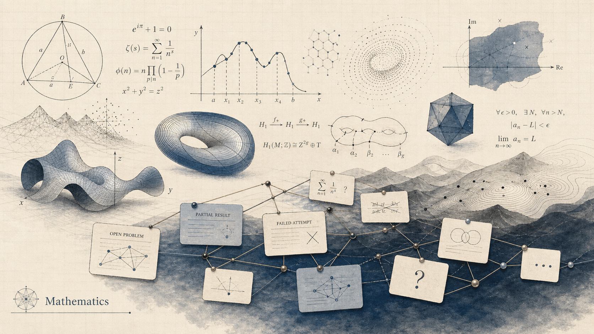
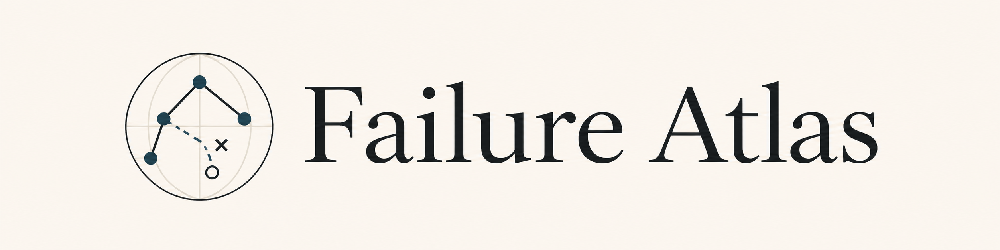
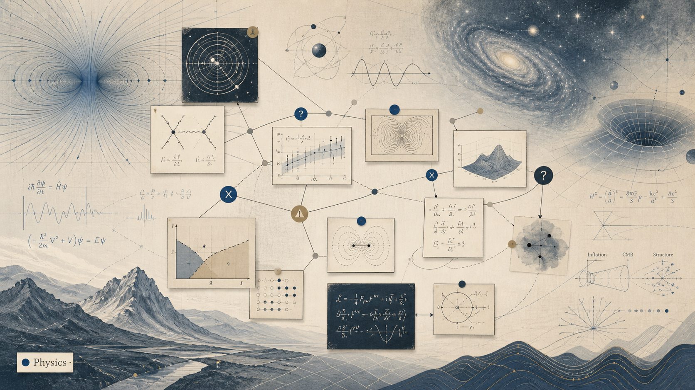
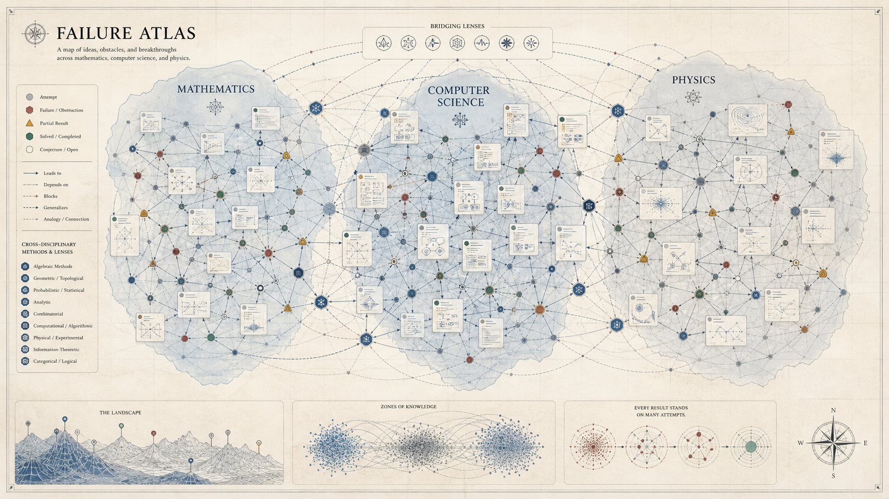

Number theory, geometry, topology, algebra, analysis, combinatorics, and solved problems.
Open Mathematics page
Mathematics · Computer science · Physics
Problem cards, failed routes, partial results, and source trails in one searchable atlas.
Featured problems
Domains

Number theory, geometry, topology, algebra, analysis, combinatorics, and solved problems.
Open Mathematics pageComplexity, algorithms, cryptography, logic, verification, machine learning, and lower bound barriers.
Open Computer Science page
Particle physics, cosmology, astronomy, condensed matter, and failure histories of experimental programs.
Open Physics page
Structured memory
Failure Atlas keeps the useful negative space of research visible: failed approaches, surviving partial results, and nearby problems that share the same methods.
Problem atlas
Failure modes
Graph layer
Use the controls to compare fields, relation types, and shared attempted methods.
Click a node to open its card and update the explorer below.
Open a problem to inspect tried methods, partial successes, failures, and neighboring cards.
Click a method, partial result, failure, or source to inspect the local proof history.
Drag the nodes to inspect how problems, methods, partial results, failures, sources, and bridge families connect.
Bridge families show methods that travel across fields: topology in CS, spectral methods in graphs and physics, SAT and formalization in finite combinatorics, and more.
History
This timeline highlights sourced events already connected to atlas cards: breakthroughs, impossibility results, independence phenomena, barriers, and solved cases.
Contribution design
A good entry names the method, states what it proves, identifies the obstruction, and cites the sources that support it.